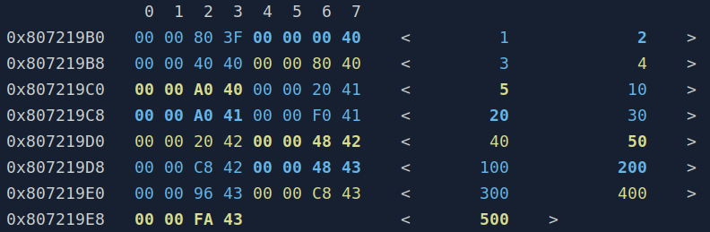
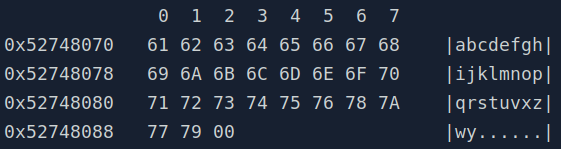

Hermes provides 4 streams of log messages: info, warn, error and critical. In practice, they just have different console colors (although in the future I may actually add some features here). The class taking care of logging is hermes::Log, but the easiest and recommended way to perform logging is by using the macros.
#define HERMES_LOG_ERROR(FMT,...)
Logs into error log stream.
Definition: logging.h:385
#define HERMES_LOG_CRITICAL(FMT,...)
Logs into critical log stream.
Definition: logging.h:396
#define HERMES_LOG(FMT,...)
Logs into info log stream.
Definition: logging.h:363
#define HERMES_LOG_WARNING(FMT,...)
Logs into warning log stream.
Definition: logging.h:374
FMT is your logging message that can be formatted to include variable values - just like printf. However, it does not follow printf's directives. hermes::Log functions format strings in a more simple way assuming that every argument will accept std::stringstream << operator (i.e., your variables must work with std::cout for example). To put an argument inside your message, you use {}, like this:
By using the macros above, Hermes will prefix your messages with a label containig file location, function name, line number, time and log stream. So the message above would probably appear like this:
[2022-01-18 14:23:26] [error] [../my_code.cpp][35][foo] 3 errors in foo
You can customize the label and the colors by configuring hermes::Log variables and options:
int main() {
hermes::log_options::use_colors);
return 0;
}
static u8 warn_color
warn stream messages color
Definition: logging.h:263
static void addOptions(logging_options options_to_add)
Enables logging options.
Definition: logging.h:253
Debug, logging and assertion macros.
You can choose among 256 colors, commonly used in terminals. You can consult them here in the 88/256 Colors section.
Sometimes you just want to log a code location while debugging to check if the coding is getting there, or simply log variables. Here is what you can do in those situations:
#define HERMES_PING
Logs into info stream code location.
Definition: logging.h:352
#define HERMES_LOG_VARIABLES(...)
Logs multiple variables into info log stream.
Definition: logging.h:455
#define HERMES_LOG_VARIABLE(A)
Logs variable name and value into info log stream.
Definition: logging.h:404
In case of logging in a CUDA code, you will not be able to use any of the macros above, you will have to use printf. The following macros do that for you:
#define HERMES_C_DEVICE_ERROR(FMT,...)
Logs into stderr from device code.
Definition: logging.h:506
#define HERMES_C_LOG(FMT,...)
Logs into stdout in printf style.
Definition: logging.h:467
#define HERMES_C_DEVICE_LOG(FMT,...)
Logs into info stdout from device code.
Definition: logging.h:493
#define HERMES_C_LOG_ERROR(FMT,...)
Logs into stderr in printf style.
Definition: logging.h:480
Note that in FMT now follows printf format options!
Finally, you may also intercept the log output as well. hermes::Log allows you to register callbacks to intercept log messages:
int main() {
};
hermes::log::addOptions(hermes::log_options::callback_only);
return 0;
}
static std::function< void(const Str &)> warn_callback
warn stream redirection callback
Definition: logging.h:276
String class and set of string functions.
Definition: str.h:53
Memory Prints
Sometimes you want to actually analyse how data is arranged in memory, with addresses, alignments, and etc. hermes::MemoryDumper is a very useful tool for printing memory footprints like this:
0 1 2 3 4 5 6 7 8 9 A B C D E F 10 11 12 13 14 15 16 17
0x4C139960 00 00 00 00 00 00 00 00 01 00 00 00 00 00 00 00 02 00 00 00 00 00 00 00
0x4C139978 03 00 00 00 00 00 00 00 04 00 00 00 00 00 00 00 05 00 00 00 00 00 00 00
0x4C139990 06 00 00 00 00 00 00 00 07 00 00 00 00 00 00 00
You can reproduce the result above with this code:
int main() {
u64 v[] = {0, 1, 2, 3, 4, 5, 6, 7};
return 0;
}
static std::string dump(const T *data, std::size_t size, u32 bytes_per_row=8, const RegionLayout ®ion=RegionLayout(), memory_dumper_options options=memory_dumper_options::none)
Dumps memory region.
Definition: memory_dump.h:239
uint64_t u64
64 bit size unsigned integer type
Definition: defs.h:89
For complex data arrangements you can define memory regions with colors to help your visualization. This is done by creating a hermes::MemoryDumper::RegionLayout instance and passing it to the dump function used in the example above. Here is an example of how to describe memory regions:
struct S {
};
S v[3] = {{{1, 2, 3}, {4, 5}},
{{10, 20, 30}, {40, 50}},
{{100, 200, 300}, {400, 500}}};
As you can see, we could color all bytes related to field S::v and S::p to help our visualization. Here is how we can define our memory layout:
using namespace hermes;
auto layout = MemoryDumper::RegionLayout().withSizeOf<S>(3)
static char blue[6]
"\e[34m"
Definition: console_colors.h:66
static char yellow[6]
"\e[33m"
Definition: console_colors.h:65
static MemoryDumper::RegionLayout memoryDumpLayout()
Gets memory layout.
Definition: math_element.h:56
RegionLayout & withColor(const std::string &console_color)
Modifies layout color.
Definition: memory_dump.h:110
Colors are provided by hermes::ConsoleColors.
A region layout may contain sub-region layouts, recursively. This way you can define memory layouts for complex classes and structures. hermes::MemoryDumper also lets you customize its output, then you can choose how it shows values for example. A cool feature is to print on the side of the memory footprint the values based on their data type. Let's put it all together in a single example:
struct S {
};
int main() {
S v[3] = {{{1, 2, 3}, {4, 5}},
{{10, 20, 30}, {40, 50}},
{{100, 200, 300}, {400, 500}}};
auto layout = MemoryDumper::RegionLayout().withSizeOf<S>(3)
.withSubRegion(vec3::memoryDumpLayout().withColor(ConsoleColors::blue))
.withSubRegion(point2::memoryDumpLayout().withColor(ConsoleColors::yellow));
MemoryDumper::dump(v, 3, 8, layout,
memory_dumper_options::type_values | memory_dumper_options::colored_output);
return 0;
}
Geometric vector classes.

Here are some screenshots of other types of outputs:

 1.9.1
1.9.1